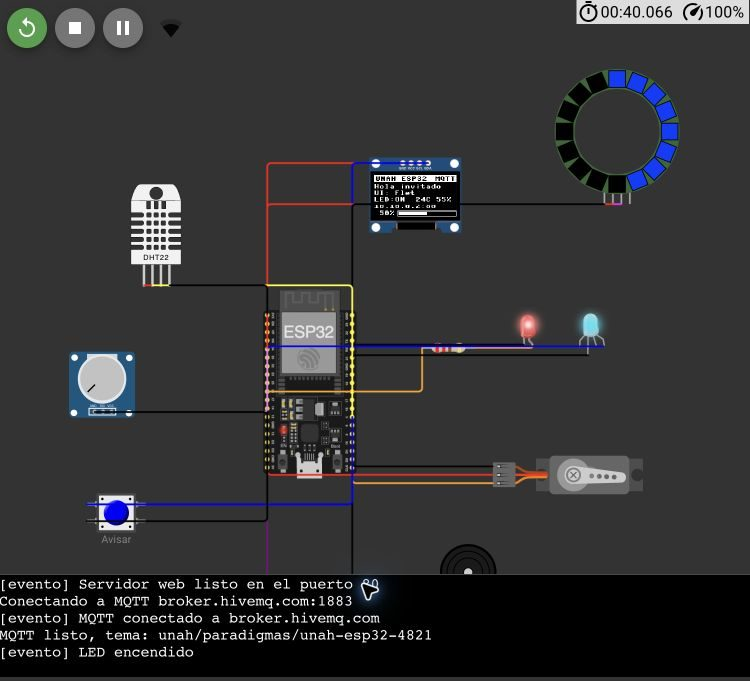

Panel IoT con Flet y un ESP32 simulado en Wokwi
Interfaz gráfica en Python que controla un LED, un servo, un LED RGB, un anillo NeoPixel, una pantalla OLED y un zumbador, y que recibe en tiempo real los sensores del ESP32, comunicándose por MQTT o por HTTP.
- Estudiante
- Número de cuenta
- Sección
- Docente
- Fecha
- 20 de octubre de 2026
1Resumen
Se construyó una aplicación en Flet que reemplaza por completo el formulario de ejemplo (nombre, casilla de términos, slider, lista de colores, opciones de framework y switch de notificaciones). Cada control ahora actúa sobre un ESP32 programado en MicroPython y simulado en Wokwi, y la app muestra en vivo lo que el ESP32 mide.
El punto de partida fue el código de referencia que conecta el ESP32 al WiFi
Wokwi-GUEST y consulta una API con urequests. Ese código se convirtió en
un firmware completo: el ESP32 levanta su propio servidor web en el puerto 80 y, además,
se conecta a un broker MQTT. Las dos vías usan exactamente el mismo formato JSON.
Contenido
- Resumen
- Arquitectura y por qué MQTT
- Circuito en Wokwi
- Interfaz en Flet
- Protocolo de comunicación
- Diseño del software
- Pruebas y verificación
- Limitaciones
- Cómo ejecutarlo
- Anexo: fragmentos de código
2Arquitectura y por qué MQTT
El requisito inicial era que el ESP32 fuera el servidor web. El firmware lo cumple: atiende
GET /api/estado, POST /api/control y sirve una página propia en
/. Sin embargo, el simulador web de Wokwi sólo permite que el ESP32 haga
conexiones de salida; para entrar a él desde la computadora hace falta el
Private IoT Gateway, que es una función de pago.
Por eso se agregó MQTT. Con MQTT nadie necesita entrar al ESP32: tanto el ESP32 como la app se conectan hacia afuera al mismo broker y ahí intercambian mensajes. Funciona con la cuenta gratuita de Wokwi y sin instalar ningún gateway.
3Circuito en Wokwi
Se usa un ESP32 DevKit C v4 con MicroPython. El circuito completo está en
wokwi/diagram.json y el programa en wokwi/main.py; ambos se pegan tal cual
en un proyecto ESP32 MicroPython de Wokwi.
| Componente | Pin | Uso |
|---|---|---|
| LED rojo + resistencia 220 Ω | GPIO 26 | Botón «Encender LED» |
| LED RGB (cátodo común) | 25 · 33 · 32 | Color favorito |
| Servomotor | GPIO 18 | Slider → 0–180° |
| Anillo NeoPixel de 16 LEDs | GPIO 13 | Nivel y efectos |
| Pantalla OLED SSD1306 | SDA 21 · SCL 22 | Nombre, framework, mensaje |
| Zumbador | GPIO 27 | Notificaciones y melodía |
| DHT22 | GPIO 15 | Temperatura y humedad |
| Potenciómetro | GPIO 34 | Lectura analógica 0–100 % |
| Botón «Avisar» | GPIO 4 | Evento con aviso en la app |

4Interfaz en Flet
La interfaz conserva los elementos fundamentales del ejemplo, pero cada uno tiene un efecto real. Se rediseñó con los colores institucionales (azul y oro de la UNAH), el logo de la universidad en el encabezado, tarjetas con sombras suaves y un indicador de conexión que muestra la latencia.

| Control de la app | Efecto en el ESP32 |
|---|---|
| Campo Nombre (TextField) | Saludo «Hola, …» en la OLED |
| Casilla Acepto los términos (Checkbox) | Sólo en la app: habilita o bloquea los demás controles |
| Botón Encender LED | Enciende o apaga el LED del GPIO 26; el ESP32 confirma el estado |
| Slider de nivel | Mueve el servo (0–180°) y llena el anillo (0–16 LEDs) |
| Color favorito (Dropdown) | Color del LED RGB y del anillo |
| Efecto del anillo (SegmentedButton) | Nivel, Respirar, Arcoíris o Termómetro (sigue la temperatura) |
| Framework favorito (RadioGroup) | Se muestra en la OLED |
| Notificaciones (Switch) | Activa los pitidos del zumbador y los avisos de la app |
| Mensaje para la OLED | Texto en la OLED; si es largo se desplaza |
| Botón Tocar melodía | Melodía en el zumbador |
| Botón Reiniciar contador | Pone en cero las pulsaciones del botón «Avisar» |
Del ESP32 se reciben: temperatura, humedad, potenciómetro, pulsaciones del botón, señal WiFi, tiempo activo, memoria libre, ángulo del servo y los colores reales del anillo. Los eventos (botón presionado, alerta de temperatura, comandos aplicados) se muestran en la caja de texto «Mensajes recibidos del ESP32».

Sincronización en ambos sentidos
La app no sólo envía: también adopta el estado real del ESP32. Si el LED se cambia desde otro lugar (por ejemplo, desde la página propia del ESP32), el botón de la app se actualiza solo. Para no «regresar» un control que el usuario acaba de mover, durante 2 segundos se ignora lo que diga el ESP32 sobre ese control.
Estados de conexión
El indicador del encabezado muestra en línea, con el tipo de conexión y la latencia, o sin conexión, con un mensaje que explica qué revisar.

5Protocolo de comunicación
El tema base es unah/paradigmas/<CODIGO>. El código (por defecto
unah-esp32-4821) debe ser igual en wokwi/main.py y en la app; así varios
estudiantes pueden usar el mismo broker público sin mezclarse.
| Tema MQTT | Quién publica | Contenido |
|---|---|---|
…/estado | ESP32, cada segundo y tras cada comando (retenido) | Sensores, salidas, anillo y últimos 10 eventos |
…/control | App | Sólo los cambios pedidos |
…/conexion | ESP32 · el broker, como «última voluntad» | online / offline |
Por HTTP el contenido es el mismo: POST /api/control recibe el JSON de comandos y
responde el estado; GET /api/estado?desde=N devuelve el estado con los eventos
cuyo id es mayor que N.
Comando (app → ESP32)
{
"led": true,
"nivel": 75,
"color": "Rojo",
"rgb": [255, 0, 0],
"efecto": "arcoiris",
"nombre": "Ana",
"framework": "PyQt6",
"notificaciones": true,
"mensaje": "Hola UNAH",
"accion": "melodia"
}
// todos los campos son opcionales
Estado (ESP32 → app), abreviado
{
"ip": "10.10.0.2",
"tiempo_activo": 142,
"memoria_libre": 80384,
"mqtt": true,
"sensores": {
"temperatura": 40.0, "humedad": 55.0,
"potenciometro": 20, "pulsaciones": 2 },
"salidas": {
"led": false, "nivel": 100,
"efecto": "termometro", … },
"servo_grados": 180,
"anillo": ["#d4002a", … 16 colores],
"eventos": [{ "id": 17, "t": 120,
"tipo": "aviso",
"texto": "Alerta: temperatura alta (40.0 C)" }],
"ultimo_evento": 17
}
El ESP32 valida cada campo: los números se limitan a su rango, los efectos y frameworks
desconocidos se rechazan y un JSON inválido no lo detiene. Cada evento lleva un id
creciente; la app recuerda el último que mostró, así no repite eventos y detecta cuándo el
ESP32 se reinició (los ids vuelven a empezar).
6Diseño del software
| Archivo | Responsabilidad |
|---|---|
wokwi/main.py | Firmware MicroPython: WiFi, servidor HTTP, cliente MQTT, sensores, anillo, OLED y sonido |
wokwi/diagram.json | Circuito de Wokwi |
src/main.py | Interfaz Flet y ciclo de sincronización |
src/esp32.py | Conexión con el ESP32: ConexionMQTT y ConexionHTTP con la misma interfaz |
tools/esp32_en_pc.py | Ejecuta el mismo firmware en la computadora imitando el hardware, para probar sin Wokwi |
tests/test_main.py | 12 pruebas automáticas de la capa de conexión |
Paradigmas aplicados
- Orientado a objetos.
Conexiondefine lo común (cola de cambios, filtro de eventos);ConexionMQTTyConexionHTTPla heredan y sólo cambian cómo se envía y recibe. La interfaz trabaja con cualquiera de las dos sin saber cuál es (polimorfismo). - Orientado a eventos. Cada control de Flet reacciona a su evento (
on_change,on_click); en el ESP32, el botón usa una interrupción y MQTT un callback al recibir. - Concurrente. El ESP32 usa
asynciopara atender HTTP, MQTT, sensores, anillo y pantalla a la vez en un solo núcleo. En la app, Flet ejecuta los eventos en otros hilos, por eso la cola de cambios pendientes se protege con unthreading.Lock.
Cambios agrupados
Al arrastrar el slider se generan decenas de eventos por segundo. En vez de mandar uno por uno, la app los acumula en un diccionario de pendientes y el ciclo de sincronización envía sólo el último valor de cada campo. Si el envío falla por red, se reintenta sin pisar cambios más nuevos y sin repetir acciones como la melodía.
7Pruebas y verificación
Se verificó en tres niveles: pruebas automáticas, el firmware ejecutado en la computadora y, por último, de punta a punta con el simulador real de Wokwi en Chrome.
| Prueba (en Wokwi por MQTT, salvo que se indique) | Resultado |
|---|---|
| Arranque: WiFi, servidor web y MQTT sin errores en el serial | Correcto |
| Encender / apagar LED desde la app | Correcto |
| Slider en 0, 50 y 100 → servo 0°, 90°, 180° y anillo 0, 8, 16 LEDs | Correcto |
| Colores Rojo y Verde en el LED RGB y el anillo | Correcto |
| Efectos Arcoíris y Termómetro | Correcto |
| Nombre «Ana» y mensaje «Hola UNAH» en la OLED | Correcto |
| Melodía en el zumbador | Correcto |
| Botón «Avisar» → contador, bitácora y aviso en la app | Correcto |
| DHT22 a 40 °C → alerta de temperatura alta | Correcto |
| Potenciómetro al 20 % → la app muestra 20 % | Correcto |
| Detener la simulación → la app marca «sin conexión» | Correcto · 5,7 s |
| Reiniciar la simulación → la app se reconecta sola | Correcto · 11 s |
| Código o broker equivocado → mensaje claro de qué revisar | Correcto |
| Selector «HTTP directo» (firmware ejecutado en la computadora) | Correcto |
| Vista angosta de la app (600 px) | Correcto |


Tiempos medidos
| Medición | Tiempo |
|---|---|
| Clic en la app → LED en Wokwi | ≈ 0,6 s |
| Potenciómetro en Wokwi → app | ≈ 1,1 s |
| Ida y vuelta MQTT (broker público) | ≈ 0,3 s |
| Ida y vuelta con Mosquitto local | ≈ 0,03 s |
| HTTP directo (firmware en la PC) | ≈ 0,005 s |
Pruebas automáticas
uv run pytest → 12 aprobadas. Cubren el agrupado de cambios, el reintento
sin repetir acciones, la detección de reinicio, los eventos sin duplicados y los casos de
broker caído o ESP32 sin publicar.
8Limitaciones
- HTTP directo con Wokwi requiere pago. El servidor web del ESP32 funciona, pero en el simulador web sólo se alcanza con el Private IoT Gateway (plan Hobby de Wokwi). Con la cuenta gratuita se usa MQTT.
- Broker público. Cualquiera que conozca el tema podría leer o enviar mensajes. Para la demo se mitiga usando un código propio. La alternativa es un broker privado.
- Mosquitto propio con ngrok. Está preparado (
tools/mosquitto.conf) y probado en local, pero el túnel TCP de ngrok exige registrar una tarjeta en la cuenta gratuita, y su dirección cambia cada vez que se reinicia ngrok. - Recarga de la página en modo web. Flet registra un error interno de WebSocket al recargar la pestaña; no afecta el funcionamiento.
9Cómo ejecutarlo
- En wokwi.com, crear un proyecto ESP32 · MicroPython y pegar
wokwi/main.pyywokwi/diagram.json. Iniciar la simulación; el serial debe mostrarMQTT listo, tema: unah/paradigmas/unah-esp32-4821. - En la computadora, dentro del proyecto:
uv run flet run # app de escritorio uv run flet run --web # o en el navegador
- Dejar la conexión en MQTT con broker
broker.hivemq.com:1883y el mismo código que en el firmware. Aceptar los términos y usar los controles.
Sin Wokwi: uv run python tools/esp32_en_pc.py ejecuta el mismo firmware en la
computadora; en esa terminal se escribe boton, temp 38 o pot 25
para simular el hardware.
10Anexo: fragmentos de código
ESP32 · tarea MQTT (wokwi/main.py)
async def tarea_mqtt(): id_cliente = "esp32-" + binascii.hexlify(unique_id()).decode() while True: try: cliente = MQTTClient(id_cliente, MQTT_BROKER, port=MQTT_PUERTO, keepalive=15) cliente.set_callback(al_recibir) cliente.set_last_will(TEMA + "/conexion", b"offline", retain=True) cliente.connect() cliente.subscribe(TEMA + "/control") cliente.publish(TEMA + "/conexion", b"online", retain=True) while True: cliente.check_msg() # ¿llegó un comando? if publicar_ya or pasó_un_segundo: datos = json.dumps(estado(ultimo_id - 10)) cliente.publish(TEMA + "/estado", datos.encode(), retain=True) await asyncio.sleep_ms(50) # deja correr las demás tareas except Exception: await asyncio.sleep(3) # reintenta la conexión
ESP32 · validación de un comando (extracto)
def aplicar(cambios): errores = [] if "led" in cambios: nuevo = bool(cambios["led"]) if nuevo != salidas["led"]: salidas["led"] = nuevo registrar("LED " + ("encendido" if nuevo else "apagado")) pitar() if "nivel" in cambios: salidas["nivel"] = a_entero(cambios["nivel"], 0, 100) # se limita al rango if "efecto" in cambios and cambios["efecto"] not in EFECTOS: errores.append("efecto desconocido") … led.value(1 if salidas["led"] else 0) mover_servo(salidas["nivel"]) return errores
App · polimorfismo en la conexión (src/esp32.py)
class Conexion: def pedir(self, **cambios): # lo llaman los controles de Flet with self._lock: self._pendientes.update(cambios) async def sincronizar(self) -> dict: # cada subclase decide cómo raise NotImplementedError class ConexionMQTT(Conexion): async def sincronizar(self): cambios = self._tomar_pendientes() if cambios: self._mqtt.publish(self.tema + "/control", json.dumps(cambios)) return self._filtrar_eventos(dict(self._estado)) class ConexionHTTP(Conexion): async def sincronizar(self): cambios = self._tomar_pendientes() respuesta = await self._http.post(f"{self.url}/api/control", json=cambios) return self._filtrar_eventos(respuesta.json())
Los fragmentos están simplificados para leerse en papel; el código completo está en el repositorio.